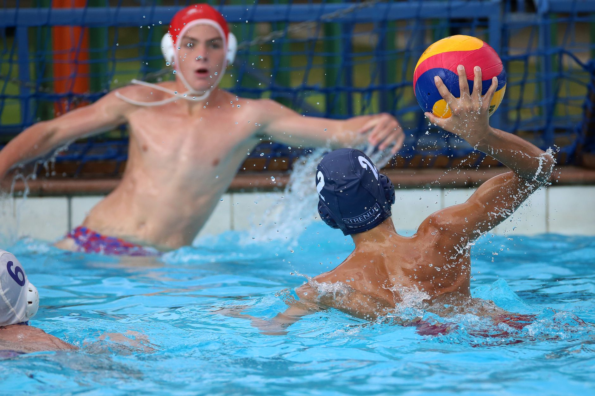

A New Chapter for Water Polo in Florida
Something exciting is happening in Florida's aquatic sports community. Tallahassee High School recently completed its very first water polo season — and rather than treating it as a one-time experiment, the program is already making plans to grow. This milestone is a powerful reminder that water polo is no longer a niche sport reserved for coastal elite programs. It is expanding, it is accessible, and it is capturing the attention of young athletes and families all across the Sunshine State.
For parents in Wesley Chapel, Land O' Lakes, and the greater Tampa Bay area, this is the perfect moment to take a closer look at what water polo has to offer — and why your young athlete might thrive in the water.
Why Water Polo Deserves Your Attention
Water polo is one of the most physically demanding team sports in the world. Players must tread water continuously, sprint across the pool, pass with precision, and think strategically — all at the same time. The sport builds cardiovascular endurance, upper body strength, coordination, and mental toughness in ways that few other athletic pursuits can match.
Beyond the physical benefits, water polo teaches young athletes invaluable life skills. The sport demands communication, trust, and split-second decision-making. Players learn how to work as a unit, how to handle pressure, and how to support one another through both wins and setbacks. These are qualities that carry far beyond the pool deck and into the classroom, the workplace, and everyday relationships.
The Academic and Recruiting Advantage
Here is something many Tampa Bay families may not yet realize: collegiate water polo is actively seeking talented players, and the recruiting landscape for this sport is far less saturated than it is for football, basketball, or soccer. That means a skilled, dedicated young athlete who develops their game early has a genuine opportunity to earn athletic scholarships and compete at the college level.
As more high school programs emerge across Florida — just as we are seeing in Tallahassee — club and youth development pathways become increasingly important. Young athletes who begin training now will be well ahead of the curve when varsity rosters start forming at local schools.
Building the Foundation Early
Strong water polo players are almost always strong swimmers first. The ability to read the water, move efficiently, and maintain stamina under fatigue comes directly from a solid swimming foundation. This is why early aquatic training matters so much, and why programs that prioritize both swimming technique and sport-specific water polo skills give young athletes such a meaningful head start.
At Nexar Aquatic Academy, we work with young athletes in Wesley Chapel and Land O' Lakes to build exactly that kind of well-rounded aquatic foundation. Whether a player is just discovering the sport or preparing to compete at a higher level, our coaches focus on developing the whole athlete — technically, physically, and mentally.
The Time to Start Is Now
The growth of water polo in Florida is not slowing down. With new programs launching at high schools across the state, the demand for skilled, experienced club players is only going to increase. Young athletes who invest in their development today will be the ones leading those rosters tomorrow.
If your child has a passion for the water, a competitive spirit, and a desire to be part of something that is truly growing, water polo may be exactly the right fit. We encourage Tampa Bay families to explore the sport, ask questions, and take that first step toward the pool.
The next great water polo story in Florida could belong to your young athlete.
Ready to get in the water?
First practice is completely FREE — no commitment needed.